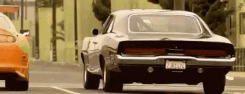

El Dodge Charger es un automóvil deportivo de tamaño mediano, producido por el fabricante estadounidense Chrysler y vendido bajo la división Dodge, de 1966 a 1978. Estaba basado en la plataforma "B-body" de Chrysler, la misma que compartía con el Dodge Coronet y con los Plymouth medianos como el Plymouth Satellite y el Belvedere.
La producción total para 1970 fue de 49 768 coches. De los cuales 10 337 sorpresivamente eran R/T. Se seguía vendiendo bien en comparación con los modelos 1966-67, aunque las ventas cayeron hasta un poco más de la mitad de lo habían sido en 1968 y hubo menos de la mitad en 1969 con gran desempeño.
El estándar venía con el Slant-six de 225 plg³ (3,7 litros) o el V8 de 318 plg³ (5,2 litros), con tres velocidades, asientos de banca de vinilo, alfombrillas de pila profunda, volante de tres rayos con el botón de la bocina por separado, frenos autoajustables, neumáticos con cinturón de fibra de vidrio, suspensión heavy duty (de servicio pesado) con barras de torsión frontales, barra estabilizadora frontal y ballestas traseras, protectores de parachoques traseros, faros ocultos y un tapón de combustible de llenado rápido. El freno de estacionamiento era accionado con un pedal.
Los Charger 500 agregaron asientos baquet, un reloj y molduras de labio de rueda. En el R/T el reloj era opcional, mientras que agregó el motor de 440 plg³ (7,2 litros) con 4 bocas y escapes dobles; transmisión automática generalmente más rápida en carreras; frenos de tambor heavy duty (de servicio pesado); llantas F70 de 14 pulgadas (35,6 cm) con neumáticos de flanco blanco; paquete de conducción R/T; salpicadero de imitación tipo nuez simulada; limpiaparabrisas de tres velocidades y rayas deportivas.
Vin Diesel es Dominic "Dom" Toretto, un corredor callejero profesional y líder de los secuestradores. Vive solo con su hermana Mia y su padre era un corredor de automovilismo profesional, que fue asesinado en una carrera por un compañero piloto llamado Kenny Linder. Su coche se estrelló en la pared y se quemó. Dom golpeó a Linder con una llave inglesa, y fue desterrado de los circuitos de automovilismo de por vida. Después de eso, se convirtió en un corredor callejero. Él usa un Mazda RX-7 FD3S Veilside 1993 rojo y un Honda Civic EJ1 Turbo 1995 negro y tiene un Dodge SuperCharger R/T 1970 de su difunto padre en su garaje.
